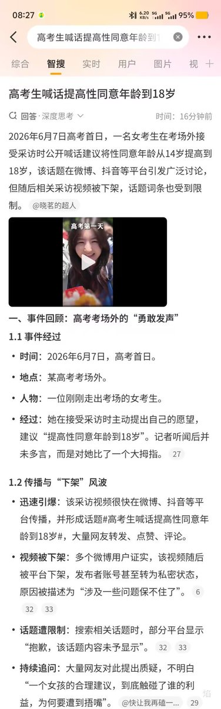
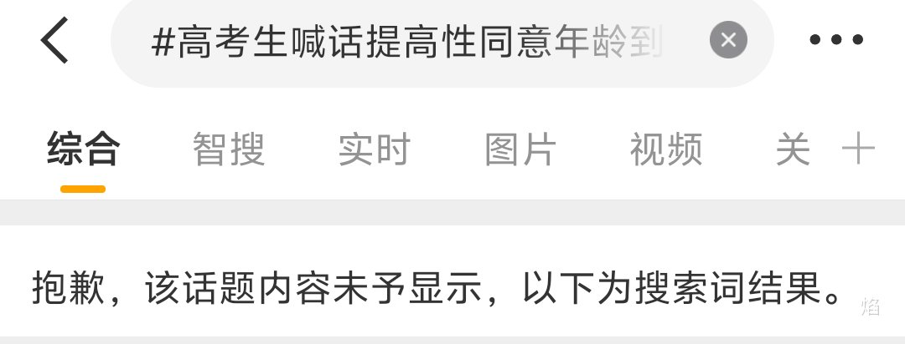
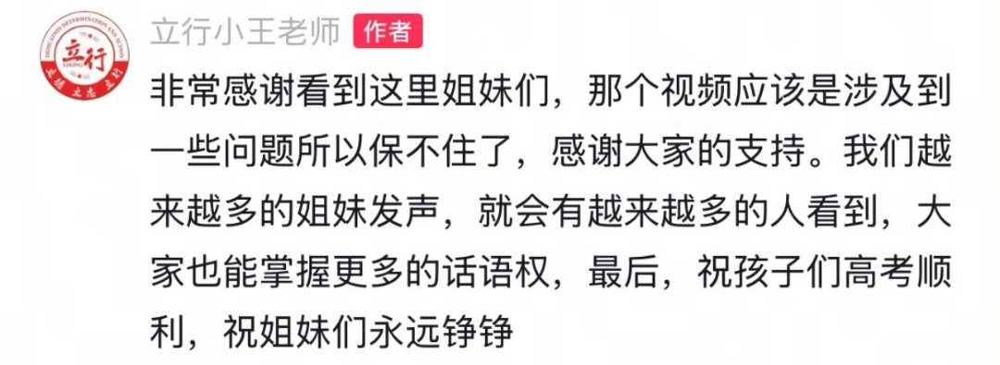

amber
@amber_medusozoa
有没有可能这样一来17岁男性强奸成年女性会被判无罪，强奸受害者反而会被关到监狱里去。权责一致嘛，没有性同意能力就意味着无法成为性侵害的法律主体。这种给未成年强奸犯大开绿灯的言论被封杀也没什么奇怪的吧



是早露泡泡兔呀
@Poca2381
高考首日，一位女考生在考场外接受采访时公开喊话，建议将性同意年龄从14岁提高到18岁，该话题迅速引发讨论，采访视频随后被下架，话题词条也受到限制。
"当一个女人握住麦克风，拥有不被打断的五分钟，她就不会只讲自己 。 https://t.co/dz0x6OK0TK